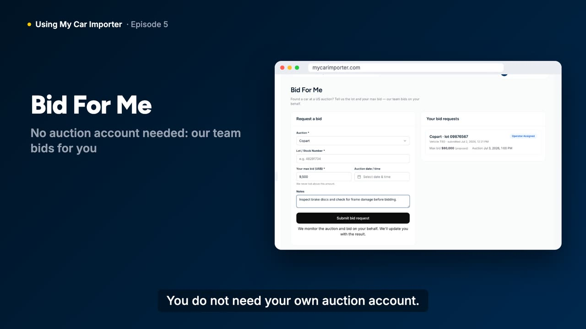
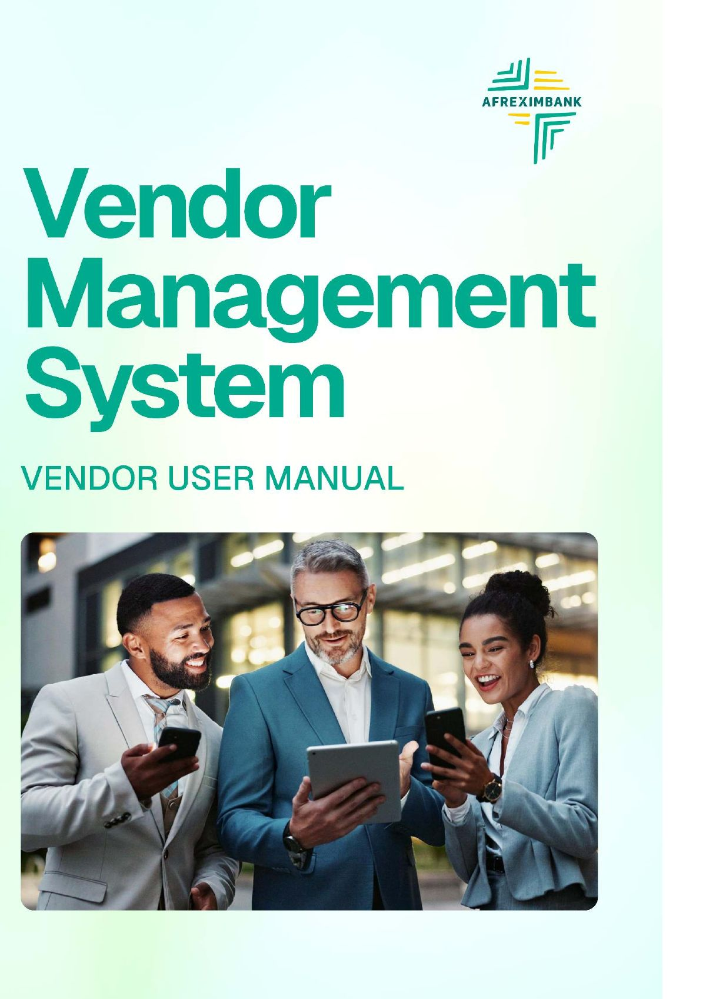
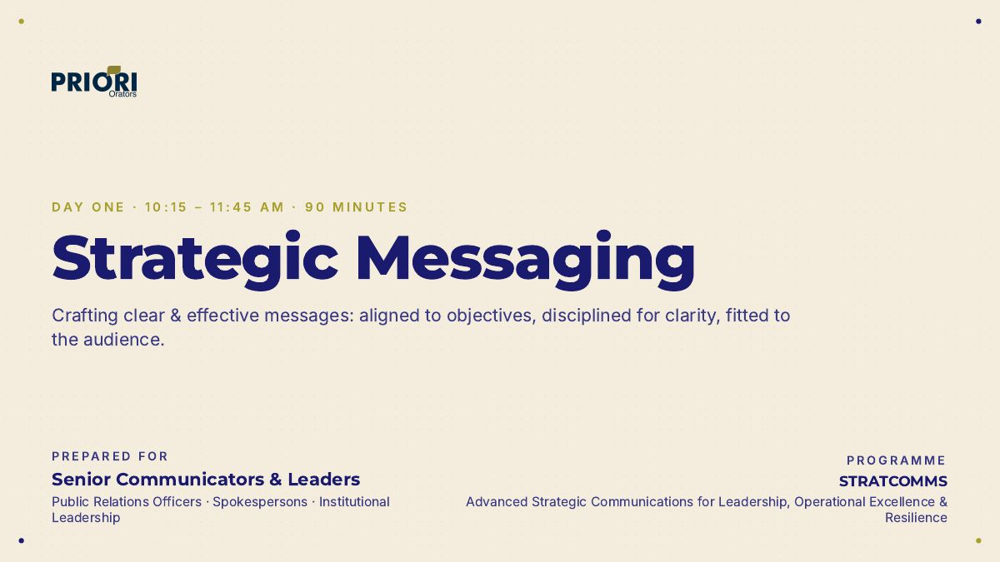

Documentation
User manuals, product documentation, solution design documents and integration guides, written to enterprise standards and kept current as products ship.
- User manuals
- API and integration docs
- SDDs and BRDs
- Release notes
When a new system launches, people need more than a login. I write the manuals, build the help centres and design the training that gets them using it, for organisations from Afreximbank and Access Bank to SaaS companies and national training programmes.
Prefer to write first? abdul.oare@gmail.com
Most projects need more than one. A new platform needs documentation, a knowledge base, onboarding and training, and the best results come when one person designs them to work together.
User manuals, product documentation, solution design documents and integration guides, written to enterprise standards and kept current as products ship.
Help centres, knowledge bases and repositories that give people one source of truth, with the structure, style guides and templates to keep them that way.
Onboarding that gets people using a new system: product tours, quick guides, email series and walkthroughs aimed at adoption, not just reference.
Turning unstructured expertise into sequenced learning, with clear objectives, hands-on exercises and pre-workshop surveys that fit the audience and the time available.
Training videos and course materials, from script to finished episode, using an AI-assisted pipeline where I write the scripts and check every claim.
Live workshops on strategic messaging, media literacy and information integrity, for national-level programmes, institutions and young people.
Each project opens with the brief, what I did and, where the client allows, the real documents and videos.

VideoEverything customers, dealers and staff need to use a US-to-Nigeria car import platform, from a blank page.

PDFA 129-page vendor manual, an 11-page Statement of Work quick guide and video walkthroughs for a pan-African bank's vendor portal.

DeckSessions on strategic messaging, AI trends and information integrity for senior communicators. 2,000+ trained, 96% satisfaction.
 Deck
DeckThree modules on digital literacy, critical reading and verification, with hands-on exercises built for young audiences.
Solution designs, requirements documents and interface documentation across Fiorano, Boomi, Kafka and SFTP.
Team, style guide, templates, SOPs and a SharePoint knowledge repository for an Africa-wide bank.
Built from scratch in HubSpot for a New York subscription SaaS's v2 launch. Rated 98% in customer satisfaction.
Knowledge base articles, tutorials and release notes for a cloud ERP for fashion brands; introduced version control.
Registered UN Global Marketplace (UNGM) vendor, available for UN and development communications and knowledge management work.
Articles and editorial work, collected in one place. Read on clippings.me
The same four steps, whether the output is a manual, a knowledge base or a video series.
I use the product end to end and interview the engineers and subject experts before writing anything, and I log the bugs and UX issues I find on the way.
I map content to real tasks and audiences: what each person needs to do, in what order, and where they will look for help.
Guides, manuals and videos, produced with docs as code and AI-assisted tooling, with every claim checked against the source.
Style guides, templates, version control and a single source of truth, so the content stays accurate after I hand it over.
Banking, SaaS, logistics, media and public institutions, in Nigeria, the UK and remotely worldwide.
Built the customer help centre, a 49-article staff knowledge base, a 35-video training library and the onboarding kit from scratch.
70+ middleware interfaces across Fiorano, Boomi, Kafka and SFTP; solution design documents, BRDs and user manuals, including the 129-page Vendor Management System manual.
Strategic communications training for national-level programmes: 2,000+ professionals trained, 96% satisfaction.
Designed and led a filmed three-day programme on digital, media and information literacy.
Founded the bank's Technical Writing unit, with its style guide, templates, SOPs and SharePoint knowledge repository.
B2B content, user guides and SOPs for IT service clients; lifted email open rates from 8% to over 20%.
Built Subkit's knowledge base in HubSpot (98% customer satisfaction) and wrote Uphance ERP documentation.
Ran editorial operations and publication standards for a news website and trained its writers.
Business development, technical writing and customer team leadership roles.
I'm Abdulkerimu Oare, Abdul to most people. I've spent more than ten years in writing and documentation, eight of them documenting SaaS and enterprise software, and alongside that I train people in strategic communication.
I'm often the person who builds the documentation function from scratch: a bank's first technical writing unit, a SaaS product's knowledge base, a car import platform's entire help centre and training library. I work directly with engineers, product managers and support teams, and treat documentation and training as part of the product.
I'm based in Abuja, Nigeria, after six years working in London, and I work remotely with teams worldwide.
Book a 30-minute call, or email me about the product, the audience and the deadline.